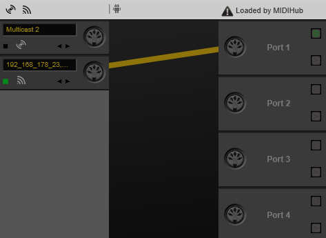

The first thing you will need to make sure is that both your smartphone and your computer/laptop are in the same network.
Example: Your phone is connected to your router via WiFi(WLAN) and your PC/Mac is connected to your router via LAN or WiFi(WLAN).
After launching the app on your phone, select your OS (Windows or macOS) below.
Step 0:
You need to download and install an additional driver available at
humatic.de
The download link is located below "Downloads" in the 5th line.
Step 1:
After installing MIDIHub, launch it. Check whether your phone's showing is on the left. If not, reboot your PC.
Step 2:
Check if another application is already accessing MIDIHub. If the upper-right text says "Loaded by MIDIHub" or the application
you wanna use it with, you can continue with Step 3. If it mentions any other software hit the triangular
exclamation point warning sign thingy right next to it and add the .exe you don't want as an exception. You might have
to repeat this until you get "Loaded by MIDIHub" or Traktor, Ableton, Maschine, ...
Step 3:
Drag and drop a virtual cable from the port symbol on the tile of the phone to "Port 1" on the right.
Remember the port name you picked and close the software.

Proceed with "After connecting" down below.
Step 1:
In Spotlight, search for "Audio MIDI Setup"and click it

Press command+2 or go to "Window" > "Show MIDI Window"

Double-click "Network"

Step 2:
Create a new session by clicking on the +

I called mine "phone session"
All the devices in your network that are currently running the app will appear
in the device directory with their corresponding IP addresses or device names. Think of it as a phone book
with phone numbers and names
Select the device you want to connect with and click "Connect"

Your device should appear on the right next to "Participants".
Step 3:
You are connected :)
Proceed with
"After connecting" down below.